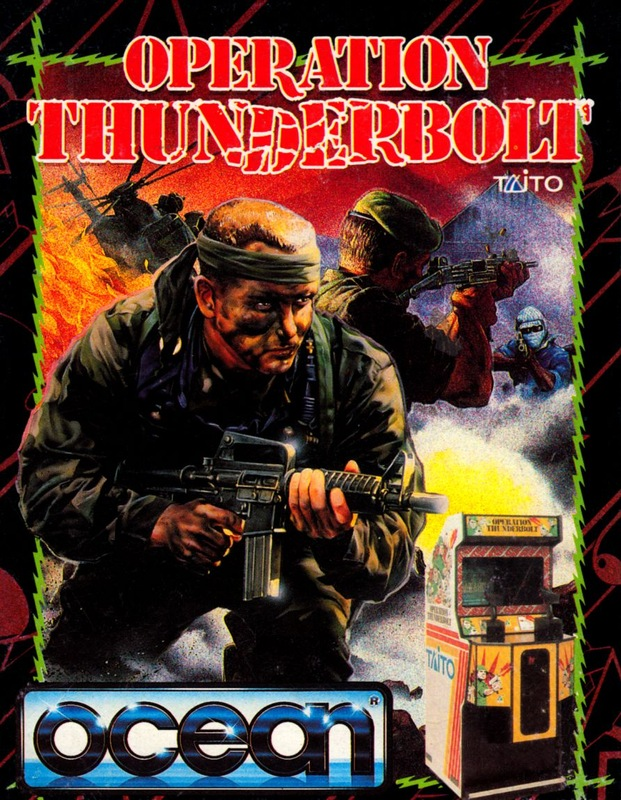
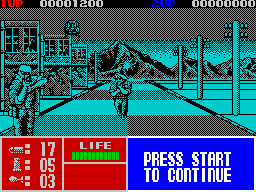

Operation Thunderbolt


{kind=link}

| Publisher: | Ocean |
| Price: | £9.99 Cass, £14.99 Disk |
| Year: | 1989 |
| Source: | CRASH, Issue 71 |

Roy Adams, the star of Operation Wolf is back in the firing line in Operation Thunderbolt. And this time he’s brought a friend — name of Hardy Jones — and together they’re after a bunch of terrorists who’ve hijacked a commercial transport DC.20 and are holding the passengers hostage. They’re demanding the immediate release of 23 comrades, or in ten hours the hostages die.
Taking off from Boston the plane has been lost from the radar somewhere over Calvia, Africa. Calvia’s leader General Kadam denies all knowledge of the hijackers and warns that if US troops are sent to his country they will be regarded as intruders and fired upon. The US President not surprisingly is concerned (peeved) at this and decides to send Roy and Hardy into carry out Operation Thunderbolt — locate and free all hostages with minimal(!) force.

Impersonating the dynamic duo, eight levels of blasting action stand between you and the hostages. Some of the screens head vertically into the distance (rather like a racing game — but without the cars), whilst the rest scroll horizontally across the screen, Op Wolf style. A cursor aims your gun, and you need every clip of ammo, while soldiers tanks, jets etc race to greet you. The gunsight is also used to pick up the hostages. As in Operation Wolf the shooting of certain objects or people reveals bonus objects like First Aid Kits, body armour, rockets which can be collected to aid in your fight. Undodged bullets or undeflected grenades, knives etc knock the old damage meter up — and if full it’s goodnight Vienna and hello afterlife.
Operation Wolf (91% issue 59) was received by us CRASH louts with great enthusiasm, and I’m glad to say that almost a year later Operation Thunderbolt has stirred similar feelings. The two player option is a great improvement, a second UZI is very welcome, ’cos the game contains the same hectic ‘spray bullets around likes maniac’ formula. Between this and Cabal I must admit that I liked this slightly more, but that’s just personal preference.
MARK — 92%
Last Chrissy I was rather pleased to find a copy of Op Wolf in my red and blue stripey stocking (shame I was still wearing them — those cassette boxes can give you a nasty scratch), so it was with much excitement that this was loaded. Yes, all the bullet-spraying mayhem is back: bigger, bolder and better than before. Again, the detailed monochrome accurately recreates the feel of the coin-op, but this time they’re much more varied — watch out for the cool guys in shades that pop up (or rather down) in level six — they’re brilliant. Two-player games add even more fun to the already addictive gameplay and cause some *!!@ shouts in hectic mid-massacre. Grab hold of your UZI, load it up with ammo and kill!!!
NICK — 91%
RATING
The improved ‘eat lead death, sucker’ formula used in Operation Wolf delivers a winner for Ocean!
| Presentation: | 87% |
| Graphics: | 98% |
| Sound: | 88% |
| Playability: | 90% |
| Addictivity: | 88% |
| Overall: | 91% |